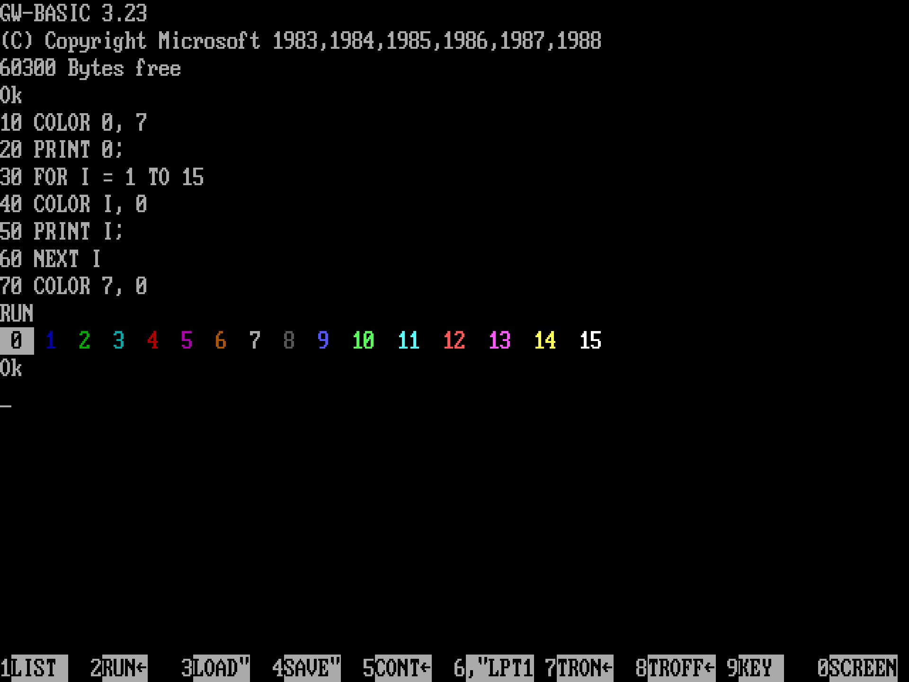
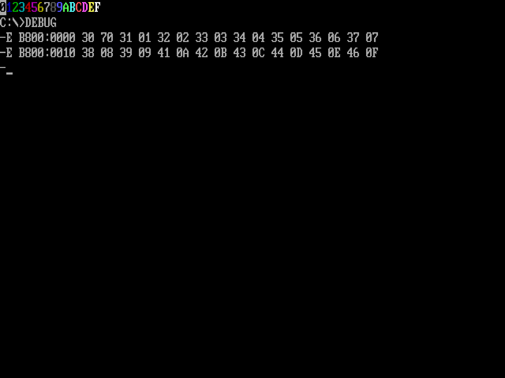

This page records some of the associations between various numbers, letters of the alphabet, and colours that occur in my mind. I must mention here that I do not have synaesthesia. Nevertheless, many of these associations are deeply ingrained in my mind due to childhood experiences I've had while learning computers and various mnemonic systems.
| Number | Colour | Sound |
|---|---|---|
| 0 | Black | /s/, /z/ |
| 1 | Blue | /t/, /d/, /θ/, /ð/ |
| 2 | Green | /n/ |
| 3 | Cyan | /m/ |
| 4 | Red | /r/ |
| 5 | Magenta | /l/ |
| 6 | Brown | /tʃ/, /dʒ/, /ʃ/, /ʒ/ |
| 7 | White | /k/, /g/ |
| 8 | Gray | /f/, /v/ |
| 9 | Light Blue | /p/, /b/ |
| 0xA | Light Green | - |
| 0xB | Light Cyan | - |
| 0xC | Light Red | - |
| 0xD | Light Magenta | - |
| 0xE | Yellow | - |
| 0xF | Bright White | - |
The sections below describe the source of some of these associations.
The number-colour associations come from early exposure to GWBASIC running on IBM machines with Colour Graphics Adapter (CGA) and Enhanced Graphics Adapter (EGA). On these systems, each supported colour was represented by an integer code: 0 for black, 1 for blue, 2 for green, and so on.

On IBM CGA machines set to video mode 3, each colour was encoded as a 4-bit number. From the most significant bit to the least significant one, the bits represented intensity, red, green, and blue. For example, the number 1 (binary 0001) represented blue whereas 9 (binary 1001) represented light blue. Further, CGA monitors had special circuit to treat colour 6 in a special way. Normally the number 6 (binary 0110) would represent yellow since the red and green signals are turned on. However, the special circuit of CGA monitors reduced the amplitude of the green signal to make the output look brown instead of yellow.
The EGA machines supported a total of 64 colours but only a maximum of 16 colours could be used at a time. These chosen colours constitute the palette. The default palette was backward compatible with CGA.
Programs that wrote text directly to video memory at address B800:0000 also used these integer codes to display text in different colors.

I still remember quite vividly how exciting it was to use the colour commands to paint the background blue and write text on it in various colours.